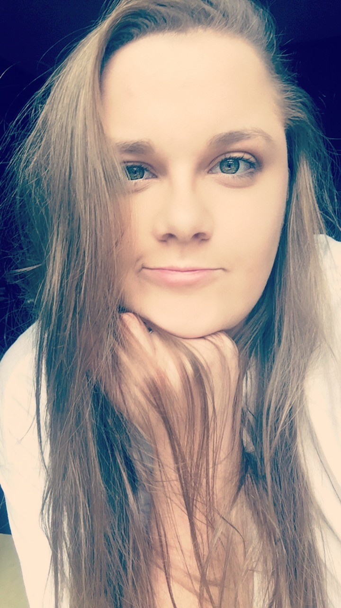
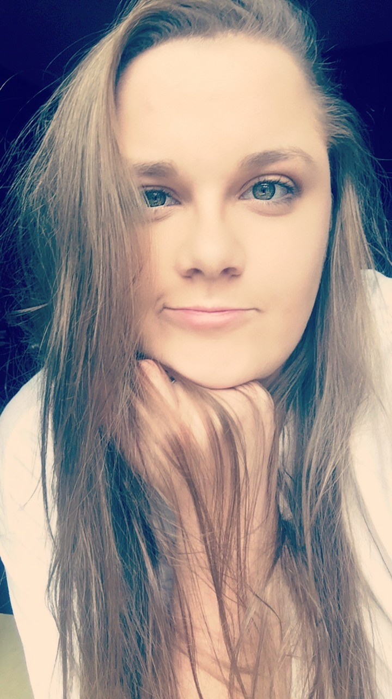

My name is Brittney Mason and I live in Cary, North Carolina. I spent the last 10 years in Boone, North Carolina building a life with my partner, Patrick. We have two amazing dogs named Dixie and Delilah. I am currently enrolled at Wake Tech Community College and I am majoring in CyberSecurity. In my free time I enjoy reading, hanging out with friends and enjoying the outside weather. I am currently working at Mellow Mushroom in Downtown Raleigh and I absolutely love it.